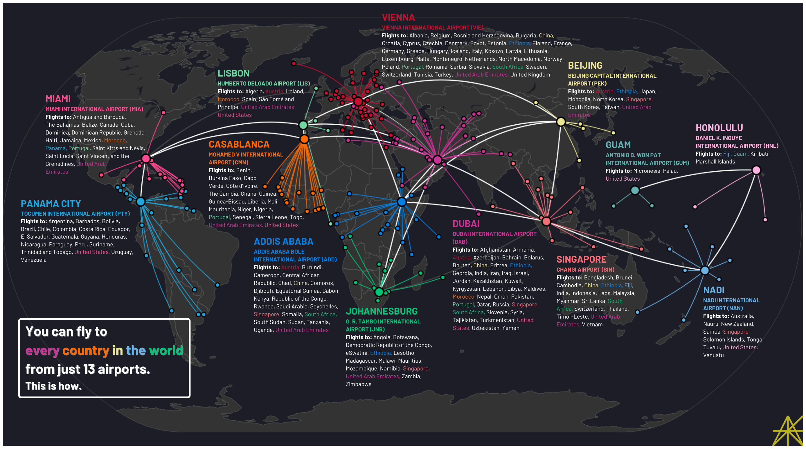

1. FUN.
Welcome to the runway of Tuvalu's Funafuti International Airport (FUN). If you want to fly to every country in the world, you have to start here.
Tuvalu is a tiny country, just 10 square miles spread out over six atolls and three reef islands. To put that in perspective, Disney World is four times bigger. Funafuti is one of Tuvalu's atolls, and its main island, Fongafale, has just enough space to accommodate a 5,000-foot-long runway. The reason you have to start here is that Funafuti International Airport has flights to just one country: Fiji. Unless you plan on sailing across the Pacific, the only way to get to Tuvalu is through Fiji.
One way out
All countries with flights from Funafuti International Airport, Tuvalu
Three flights a week to Suva, one flight a week to Nadi. That leaves a lot of downtime on the runway, which Tuvaluans use to do things like, let's say, train for the Olympics. That's what Karalo Maibuca did, because when your country doesn't have a single track, you have to go to the airport.
The airport was also Maibuca's first stop en route to the Paris Olympics, where he ran the 100 meters in 11.30 seconds. A quick Google Flights search reveals that the fastest way to get from Funafuti to Paris is a 40-hour jaunt that includes stops in Nadi, Vancouver, and London.1 Not Suva: that airport's only international destination is Funafuti itself.
That leaves one option for our next stop: Nadi International Airport. And that's where this story really begins.
2. A BRIEF MATHEMATICAL INTERLUDE
So, the challenge: find the smallest set of international airports from which you can fly to every country in the world.
I laid out this problem in more detail in Part One. But I didn't tell you how I found the answer. Here's how. (Skip to here if you don't care. Fair warning, it's going to get messy.)
As I mentioned then, I found every international flight in the world*. For most countries, there's usually one airport that accounts for nearly all of their international connections. These airports could serve as proxies for their countries, so instead of trying to figure out where you can get from Colombia, for example, we could simply look at which countries have flights from Bogotá. However, it's not always clear which airport to use as a proxy. Take the United States, which has three airports with unique focus areas: New York's John F. Kennedy International Airport, for flights to Europe; Miami International Airport, for flights to Latin America and the Caribbean, and Daniel K. Inouye International Airport in Honolulu, the country's main airport in the Pacific. And that list doesn't even include the U.S. territory of Guam, which also has flights to several North Pacific nations. All of these candidates could be part of the set of airports with flights to every country in the world.
I cut down every other country's airport tally to one, but for the U.S., I kept Miami, Honolulu, and Guam in the mix. (It'll be clear why these three airports are so important later on.) So we're still at 190 countries in the world that you can fly to and from, but we have 192 airports to consider, all connected by thousands of international flights. Here's what that looks like:
Wheels up
The 192-airport network, connected by 4,007 flights
It's a mess, to be sure. And to make it even more of a mess, if you strip away all of the context, you find that the problem in question – finding the smallest subset of a set of nodes from which all of the nodes are accessible – is actually a famous graph theory problem with no known way of finding a quick solution.
I promise we will get back to fun geography things soon. But for now, strap in.
You can think of the map above as a graph, a term often used in mathematics to describe a set of related objects. Each of the dots on the map, representing an airport, is a vertex. Flights between airports are edges, so that edges connect vertices. It turns out that the set of airports from which you can fly to every country in the world is what's called a dominating set – a subset of the 190 vertices (let's call it D) such that each vertex is either in D or has an edge connecting to an element of D.
But we don't want just any dominating set – otherwise, we could just take all 192 airports, since that qualifies as a dominating set: by definition, every airport is in that set. We want the smallest dominating set. And graph theory has a term for the size of that set, too: the spectacularly named domination number. So our question is really: what is the domination number of global air travel? And what is the corresponding subset of the world's airports?
All we need is a simple algorithm that takes in a graph and spits out the domination number. But it turns out that algorithm doesn't exist. Because – in computer science terms – this problem is NP-hard.2 Basically, what this means is that there's no quick and easy way to find the smallest dominating set, no function you can write up that will just tell you the answer.
That doesn't mean we have no chance of finding the smallest dominating set, however. We just need to find a workaround.
I tried constructing a computational algorithm of my own, starting by finding airports that have flights to the most countries, marking those countries as visited, and gradually reducing the pool of unvisited countries by adding more airports. But it became clear to me that this was the wrong approach. What I needed to do was start with the hardest countries to visit, find airports with flights to those countries, and gradually reduce the pool of unvisited countries from the bottom up. It became a logic puzzle of sorts.
What follows is the solution to that logic puzzle.
3. OUT OF TUVALU
Let's begin where we left off: Fiji's Nadi International Airport.
Fiji might seem like an odd place for an international travel hub, with a population of less than a million and a location over a thousand miles from any major city. Nadi (pronounced NAN-dee), too, isn't even Fiji's capital or its largest city. Yet every year, over two million international passengers pass through its airport, which has flights to fourteen countries around the Pacific. Check them out in the interactive map below:
South Pacific superpower
All 14 countries with flights from Nadi International Airport, Fiji
Fiji's position as the biggest country between Australia, New Zealand, and Hawaii makes it an important transit point for travelers to and from the South Pacific. Not only is it the only country with flights from Tuvalu, it has direct air connections to Nauru, Samoa, the Solomon Islands, Tonga, and Vanuatu, each of which have flights to four or fewer countries.
Fiji's growing status as a tourist destination bodes well for Nadi International, and also for its national airline, Fiji Airways. The airline just launched its longest route, a 6,600-mile journey to Dallas, Texas, where travelers can connect to flights on new partner American Airlines. Getting to Fiji has never been easier.
So Nadi allows us to tick 14 countries off the list: Australia, Canada, China, Japan, Kiribati, Nauru, New Zealand, Samoa, Singapore, Solomon Islands, Tonga, Tuvalu, the United States, and Vanuatu. It helps get a lot of the small Pacific island countries out of the way, but not all of them. We'll come back to them later, though, because Tuvalu isn't the only country with flights to just one other. We head to Johannesburg next. 14 down, 176 to go.
4. THE LESOTHO STIPULATION
The country of Lesotho is located entirely within South Africa. It's a country of mountains – it even has a ski resort – and is home to over two million people. All of these people, though, are served by just one international airport – Moshoeshoe I International Airport – which serves the capital of Maseru. This airport typically has three flights a day, all to one destination: O. R. Tambo International Airport, serving Johannesburg, South Africa.
If you want to get in or out of Lesotho, you have to go through South Africa first. That's the rule, whether by road, rail, or air. So there's no way around it: we have to add O. R. Tambo International to our list. Thankfully, you can get from there to a lot more places than just Lesotho.
A lot more.
Proud member of the six-continent club
All 36 countries with flights from O. R. Tambo International Airport, Johannesburg, South Africa
That's because O. R. Tambo International Airport is a member of an exclusive club: airports with flights to all six inhabited continents. The only other airports that achieve this distinction year-round serve New York, London, Paris, Doha, and Dubai.3 Johannesburg isn't quite the transit point that those cities are – it's second to Cairo by total passengers in Africa alone – but it can take travelers as far away as the U.S. or Australia. And for our purposes, Johannesburg is also an important regional airport: you can see southern Africa blanketed in a sea of green in the map above.
Like Nadi, Johannesburg is the primary hub of a national airline, South African Airways. It's also home base for regional airline Airlink, which operates those Lesotho flights. All in all, O. R. Tambo adds 32 countries to our tally, bringing us up to 46 through two selected airports. We start off in Africa with flights to Angola, Botswana, Cameroon, the Democratic Republic of the Congo, Egypt, eSwatini, Ethiopia, Gabon, Ghana, Kenya, Lesotho, Madagascar, Mozambique, Mauritius, Malawi, Namibia, Nigeria, Rwanda, Seychelles, Tanzania, Uganda, Zambia, and Zimbabwe. Brazil is our first stop in South America, and we get a head start in Europe with France, Germany, Netherlands, Switzerland, and the United Kingdom. Finally, we add three more countries in Asia: Qatar, Turkey, and the United Arab Emirates.
Let's take a quick look at how we're doing on the whole. In the map below, you can see our two selected airports and each country we've visited from them. If we've visited countries multiple times – so far, that's Australia, China, and the U.S. – they'll have the same color as their nearest selected airport. So they're all Fijian blue for now, but that could change. Also, you'll notice South Africa still isn't colored in – that's because even though we selected Johannesburg's airport, we haven't yet visited South Africa through an international flight from one of our selected airports. Eventually, we want all of our selected airports to connect as well.
State of the game: Checkpoint #1
2 airports selected | 46 countries visited
But before we connect the dots, we have another forced move to make. You might have seen this one coming.
5. THE HERMIT KINGDOM
In the first weeks of 2020, Air Koryo suspended all five of its international flight routes, shutting an entire country off from the rest of the world. They would not resume for a long time.
On August 22, 2023, Air Koryo made its first international flight in three and a half years. The Pyongyang-to-Beijing route was back on.
Yes, it's time to visit North Korea – metaphorically, of course. The country has one international airport, Pyongyang International Airport, and one commercial airline, Air Koryo. You (well, probably not you) can fly from Pyongyang to just two international destinations: Beijing, of course, as well as Vladivostok, a Russian port city not far from the North Korean border. Given that Beijing Capital International Airport is one of the busiest airports in the world, picking between the two isn't much of a decision. Beijing, welcome to the selection list.
From Pyongyang to the world
All 50 countries with flights from Beijing Capital International Airport, China
Beijing opened a new international airport in 2019, but make no mistake: Beijing Capital, which opened in 1958, is still China's main international airport in terms of access to other countries, scoring 50 destinations on that front. It's actually China's third-busiest airport, following those of Guangzhou and Shanghai. But unlike those two airports, it has flights to 18 European countries. It takes a special kind of airport to have flights to widely blacklisted countries such as Belarus, Russia, and North Korea alongside small European countries like Ireland, Czechia, and Hungary. That's what Beijing Capital offers.
In total, Beijing Capital nearly doubles our visited countries tally from 46 to 82. Outside Europe and Asia, we add Algeria and Mexico – interestingly, Hainan Airlines' service from Beijing is to Tijuana, not Mexico City, owing both to Tijuana's location on the Pacific coast and Mexico City's high altitude. In Europe, we add Austria, Belgium, Belarus, Czechia, Denmark, Greece, Hungary, Ireland, Italy, Poland, Russia, Serbia, Spain, and Sweden, and in Asia, we color in Azerbaijan, Bangladesh, Cambodia, Indonesia, Iran, Iraq, Kazakhstan, Malaysia, Mongolia, Myanmar, North Korea, Pakistan, the Philippines, Saudi Arabia, South Korea, Taiwan, Thailand, Turkmenistan, Uzbekistan, and Vietnam.
State of the game: Checkpoint #2
3 airports selected | 82 countries visited
So here we are! The world's starting to fill in nicely. We have a lot of work to do in the Americas, and India's certainly a glaring omission from our map, but keep in mind this is all with just three airports we were basically forced to select.4 Is it possible that the answer to the question could be a single-digit number? Time will tell.
6. GETTING SPECIFIC IN THE PACIFIC
It seems weird now, but in 1986, less than 40 years ago, two countries achieved independence from the United States. These were the Federated States of Micronesia and the Marshall Islands, two small island nations just above the Equator in the middle of the Pacific. They were part of the Trust Territory of the Pacific Islands (TTPI), a vast collection of northern Pacific islands which Allied forces took control of from Japan at the end of World War II. The United Nations handed over the responsibility of administering this territory to the United States.
In addition to Micronesia and the Marshall Islands, the TTPI included Palau, which was established as a republic in 1981 (but which didn't actually become fully sovereign until 1994!), and the Northern Mariana Islands, which remain a U.S. territory. Micronesia, the Marshall Islands, and Palau continue to maintain ties to the U.S. through the Compact of Free Association (COFA), which allows many of their citizens to live and work in the U.S., and in return gives the U.S. the right to operate military installations in those countries.
All of that is to say: getting to these countries is very hard, and the quickest way to do so is to go through U.S. territory.
Unfortunately, Nadi doesn't have flights to these three countries, so they're still on our unvisited list. The Marshall Islands has flights from just three countries: Kiribati, Micronesia, and the United States (through Honolulu). Micronesia, meanwhile, is only accessible from the other two COFA countries plus Guam. Palau, despite being the least populous member of the COFA triad, is accessible from a whopping five countries – Australia (through Brisbane), China (through Hong Kong), Micronesia, the Philippines, and Taiwan, plus Guam. This checks out in some sense, both because Palau is just a few hundred miles from the Philippines and because its barrier reefs are a growing tourist destination. But you see the problem: there's not a single airport with flights to all three of these small countries. We're going to have to add two airports to the list just to solve this puzzle.
The most efficient way to do this is by adding Guam's Antonio B. Won Pat International Airport and Honolulu's Daniel K. Inouye International Airport. This is why I added these airports to the list of potential candidates in the beginning, despite the fact that they're not primary international hubs for any country: you need them for this one specific task.
America's west Pacific outpost
All 7 countries with flights from Antonio B. Won Pat International Airport, Guam
Here's what Guam's got going on. It's not much, but importantly for our purposes, two of the seven countries you can get to from Antonio B. Won Pat International are Palau and Micronesia, both via United Airlines.5 Plus, United also operates direct flights from Guam to Honolulu, our other selection in this phase of the game:
Gateway to the Marshall Islands
All 10 countries with flights from Daniel K. Inouye International Airport, Honolulu, United States
For its position in the middle of the Pacific, Honolulu having flights to 10 countries is honestly impressive. One of those is our last remaining North Pacific island nation: the Marshall Islands. With these two selections, Honolulu and Guam, our visited countries tally increases from 82 to 85. Here's the map:
State of the game: Checkpoint #3
5 airports selected | 85 countries visited
The only visible change is Canada's flip to Honolulu pink (thank Vancouver, the Pacific's most underrated hub, for that). But just know that three very hard-to-reach countries are off the list. On we go.
7. THE CAPITAL OF THE CARIBBEAN
The city of Miami technically isn't in the Caribbean. But it acts like it is.
At the outset, the island countries of the Caribbean seemed like they could have been an interesting part of the puzzle. Like their counterparts in the Pacific, they don't have too many air connections, though they're a lot closer together geographically. The thing, though, is that you can get to all of them from Miami International Airport.
And not just them. There's more.
Everybody loves Florida
All 45 countries with flights from Miami International Airport, United States
There's no better way to make headway in the Western Hemisphere. There are 23 countries in North America. Miami has flights to every single one of them. Even among South American countries, there are just four – Paraguay, Suriname, Uruguay, and Venezuela (the latter for obvious reasons) – that don't have flights from Miami.
This is why I chose Miami as the main airport to represent the United States for the purposes of this problem, despite the fact that it's just the tenth-busiest airport in the country. Even for international passengers, it still trails JFK and LAX, but while those airports tackle a smattering of trans-Atlantic and trans-Pacific destinations respectively, the Caribbean is left for Miami, the American Airlines powerhouse, to handle. With Miami International under our belt, our visited countries tally goes from 85 to 116, locking down almost all of the Americas. In North America, we add Antigua and Barbuda, The Bahamas, Barbados, Belize, Costa Rica, Cuba, Dominica, the Dominican Republic, El Salvador, Grenada, Guatemala, Haiti, Honduras, Jamaica, Nicaragua, Panama, Saint Kitts and Nevis, Saint Lucia, Saint Vincent and the Grenadines, and Trinidad and Tobago. In South America, meanwhile, we get to visit Argentina, Bolivia, Chile, Colombia, Ecuador, Guyana, and Peru.
And that's not all: in the Old World, we add Israel, Morocco, Norway, and Portugal. It's not just Americans who want to visit Miami, after all.
State of the game: Checkpoint #4
6 airports selected | 116 countries visited
There's no question about it: American Airlines is absolutely essential for this game. Without their Caribbean service, we'd need to add a few more airports. But we still have four countries to visit in South America.
Luckily, we have another powerhouse airport up our sleeve.
8. THE ISTHMUS
There is one and only one airport in the world with flights to every country in South America. Is it São Paulo's Guarulhos International Airport, serving the most populous city on the continent? No. Is it Ezeiza in Buenos Aires? Nope. Somewhere more central like Lima? Also no. It's Tocumen International Airport in Panama City.6
Perfect positioning
All 32 countries with flights from Tocumen International Airport, Panama City, Panama
One notable thing about Panama City: it's in North America. And yet it's the only city from which you can fly directly to every South American country. The reason why mostly boils down to Guyana and Suriname, the two small countries in northeastern South America, which don't have flights to cities like São Paulo because of distance (far) and demand (low). Meanwhile, because Panama City is a useful transit point to get just about anywhere in the Americas, it can still accommodate flights to faraway destinations like Montevideo, Uruguay. Every non-island country in North and South America is directly accessible from Panama City.
Things got a little bit shaky in July when Panama and Venezuela got into a diplomatic spat, leading Panama's flag carrier Copa Airlines to suspend all flights to Venezuela. Fortunately, it seems as though Turpial Airlines, a Venezuelan airline headquartered in Valencia, is still operating flights between that city and Tocumen International.7
State of the game: Checkpoint #5
7 airports selected | 120 countries visited
With Panama City in tow, we visit Paraguay, Suriname, Uruguay, and Venezuela. And just like that, we're done with the Americas! We're sitting at 120 countries visited through just seven selected airports – just 70 more to go.
Where next? Incredibly, for one final time, we have to return to the Pacific.
9. TYING UP LOOSE ENDS
Let's sum up where we are. We had no choice but to select Nadi, Johannesburg, and Beijing at the start, thanks mainly to Tuvalu, Lesotho, and North Korea. We then visited the three island countries of the North Pacific by adding two more airports in Guam and Honolulu – as well as we could have done. And we've just added Miami and Panama City to cover all of the Americas – again as efficiently as we could have done.
So while there's a few loose ends we need to tie up in the Asia-Pacific, it's not because we've made any mistakes along the way. You do have to zoom in quite a bit to see the full scope of the problem, though.
Papua New Guinea is the big one we haven't visited, just northeast of Australia. But there's also Laos, nestled between Thailand and Vietnam; the petrostate of Brunei, which shares the island of Borneo with parts of Malaysia and Indonesia; and Timor-Leste, also just north of Australia. Plus, there are several countries in South Asia it would be nice to get to at some point.
What if there were a way we could visit all of these countries in one fell swoop?
The world's best airport?
All 43 countries with flights from Changi Airport, Singapore
Our salvation comes in the form of Singapore's Changi Airport, frequently renowned as the world's best airport. Despite the fact that Singapore is less than 300 square miles in area, its airport is the fifth-busiest in the world by international passenger traffic, following Dubai, London, Amsterdam, and Paris. Changi is both regionally important, as the only airport with flights to every country in Southeast Asia, and a global hub, as best demonstrated by Singapore Airlines' service to New York – the longest direct flight in the world.
In a way, choosing Changi was inevitable, because of Timor-Leste, the Portuguese-speaking republic that occupies half an island. Its international airport, in the capital of Dili, has flights to just four international destinations: Darwin and Melbourne in Australia, both of which trail Sydney in terms of aviation importance; Denpasar, on the Indonesian island of Bali, which accommodates a lot of tourists but is also not its country's primary airport; and Singapore. It was an easy choice.
State of the game: Checkpoint #6
8 airports selected | 132 countries visited
Singapore also functions as a hub airport for our selections, connecting Johannesburg and Beijing to Nadi. We've dramatically narrowed the scope of the puzzle left to be solved: every country we have yet to visit lies between Iceland in the west and Bhutan in the east. Singapore gets us to 132 countries visited: in Asia, we add Bangladesh, Bahrain, Brunei, India, Laos, the Maldives, Nepal, Sri Lanka, and Timor-Leste, and elsewhere, we add Finland (surprisingly), Papua New Guinea, and South Africa.
The strategy of finding a hard-to-reach country and selecting the best airport with access to that country seems to be working. Let's run it back.
10. UNCONDITIONAL AVIATION
As we approach what seems to be the endgame, one thing stands out: there are kind of a lot of countries yet to be visited that are not exactly known for their stability. Afghanistan. Syria. Yemen. Sudan. Somalia. It could be very challenging to get to these countries, given their volatile travel situations.
But it doesn't have to be. Enter Dubai International Airport.
At the heart of it all
All 99 countries with flights from Dubai International Airport, United Arab Emirates
Dubai is essentially the great unifier of airports. It doesn't matter who's in charge of your country, whether there's a conflict happening, how small it is – if it's a country, Dubai probably has flights to it. In fact, Dubai International has flights to 99 of the world's 190 countries, more than any airport in the world, save for Istanbul. Like Johannesburg, Dubai is a member of the six-continent club, with flights to destinations as far away as Brazil and New Zealand. It's the busiest airport in the world by international passenger traffic.
While Emirates, one of the world's biggest airlines, handles most of the long-distance work, it's actually the low-cost airline Flydubai that hits a lot of the countries closer to home: Djibouti, Eritrea, Somalia, South Sudan, and more. And not only do Dubai's flights blanket the Middle East and North and East Africa, we also get to visit the three Central Asian countries we've been missing – Afghanistan, Kyrgyzstan, and Tajikistan – as well as Bhutan, our one remaining destination in South Asia, thanks to Drukair's new Dubai-Paro service. Plus, with Emirates' Miami service, all of our selected airports are now directly connected.
State of the game: Checkpoint #7
9 airports selected | 162 countries visited
Emirates, Flydubai, and company increase our visited countries tally from 132 to 162, a monumental jump this late in the game. We complete our tour of Asia with visits to Afghanistan, Armenia, Bhutan, Georgia, Jordan, Kyrgyzstan, Kuwait, Lebanon, Oman, Syria, Tajikistan, and Yemen. In Europe, we tack on Albania, Bosnia and Herzegovina, Bulgaria, Croatia, Cyprus, Latvia, Moldova, Romania, Slovakia, and Slovenia. And in Africa, we get to add Djibouti, Eritrea, Guinea, Libya, Somalia, South Sudan, Sudan, and Tunisia.
So as it stands, just 28 countries remain, eight in Europe (despite not yet selecting any European airports) and 20 in Africa, mainly in the western and central parts of the continent. The finish line is in sight!
11. THE AFRICAN UNION
Africa's biggest airline doesn't hail from Egypt, the site of its busiest airport; Nigeria, its most populous country; or South Africa, with connections to all six inhabited continents. It's Ethiopian Airlines.
Emperor Haile Selassie I founded the airline in 1945, and since then, it has turned Addis Ababa Bole International Airport into one of the world's biggest hubs in terms of destinations served. In fact, of all of Africa's airports, Bole International has flights to the most countries. It makes sense: Addis Ababa is the headquarters of the African Union.
Landlocked but not airlocked
All 65 countries with flights from Addis Ababa Bole International Airport, Ethiopia
The power of Addis Ababa and Ethiopian Airlines is their ability to take us to many of Africa's hard-to-reach countries. Take the Comoros, a small island country between Mozambique and Madagascar that you wouldn't have even known was missing from our visited countries list. Bole International is one of just four international airports with flights to the Comoros, with the others in Nairobi, Dar es Salaam, and the nearby French island of Mayotte. Take Chad as well: apart from Ethiopia, the only other countries with flights there are Cameroon, Egypt, Niger, Nigeria, and Turkey. The sole overlap is Bole International Airport.
By adding Addis Ababa at the tenth spot on our list, we nearly halve the size of our pool of remaining countries, from 28 to 15. All of the countries we make our first visits to are in Africa: Benin, Burkina Faso, Burundi, the Central African Republic, Chad, the Comoros, Côte d'Ivoire, Equatorial Guinea, Liberia, Mali, Niger, the Republic of the Congo, and Togo.
State of the game: Checkpoint #8
10 airports selected | 175 countries visited
Addis Ababa lays us a good foundation in West Africa. But there are still seven African countries we have yet to visit. Let's go there next. We're so close!
12. THE BEGINNING OF A BEAUTIFUL FRIENDSHIP
As it turns out, there's no way for us to visit the rest of Africa through just one airport. The reason, as it so often is, is another small island country. So we're going to go for another twofer, à la Guam and Honolulu.
First, let's get the other six countries out of the way:
If that plane leaves the ground…
All 44 countries with flights from Mohammed V International Airport, Casablanca, Morocco
Casablanca's Mohammed V International Airport is a regional hub in its own right, with flights to every country in West Africa in addition to major European and Middle Eastern destinations as well as a few even further away. Through Casablanca, we reach Cabo Verde, The Gambia,8 Guinea-Bissau, Mauritania, Senegal (the most populous country we had yet to visit), and Sierra Leone. The one country we don't get to is São Tomé and Príncipe, the island country in the Gulf of Guinea.
There are just four cities from which you can get to these islands: Luanda, Angola; Libreville, Gabon; Accra, Ghana; and Lisbon, Portugal. Given that the rest of our unvisited countries are European, we're going to have to go with Lisbon.
Remnants of empire
All 46 countries with flights from Humberto Delgado Airport, Lisbon, Portugal
Why does Lisbon's Humberto Delgado Airport have flights to a tiny African island country? Well, São Tomé and Príncipe used to be a Portuguese colony. Ironically, though, the country's national airline, STP Airways, is banned from the European Union because of a failure to meet safety standards, meaning that its flights to and from Lisbon are instead operated by the Portuguese airline EuroAtlantic Airways.
Keeping with the island theme, flights from Lisbon also enable us to visit Iceland and Malta for the first time, through Icelandair and Ryanair respectively. TAP Air Portugal has a long destination list in its own right, but the only country it adds for our purposes is Luxembourg, a country whose population is around 15 percent Portuguese.9
State of the game: Checkpoint #9
12 airports selected | 185 countries visited
So: we've created a network of 12 airports with flights to 185 countries. Just four more remain. Who have we left for last?
13. THE ROAD TO MONTENEGRO
We started in the Pacific, checked off the Americas, traveled all around Africa, and now we're here. It feels like we just need one more airport to wrap things up. At the end of it all, the five countries we have yet to visit are: Estonia, Kosovo, Lithuania, Montenegro, and North Macedonia.
How did it come to this final five? They fit a similar profile: Estonia and Lithuania are two of the three small Baltic states, and the other three countries are the smallest members of the Balkans. Looking at the map, we've reached nearly every other country in Europe from either Lisbon or Dubai. Our five remaining countries, though, are evidently too small for an airline like Ryanair or Flydubai to operate year-round flights from those cities.
But there's a centrally located hub with flights to all five of these countries. Welcome to Vienna International Airport.
Vienna waits for you
All 59 countries with flights from Vienna International Airport, Austria
Vienna International has flights to nearly every accessible country in Europe, with the exception of Slovenia (too close), plus Belarus and Russia (due to EU bans). Its flagship carrier, Austrian Airlines, takes us to the three Balkan countries we have yet to visit, and Ryanair – for whom Vienna is also a significant hub – gets us to Tallinn, Estonia. Both airlines have flights from Vienna to Vilnius, Lithuania.
And just like that, we're done!
State of the game: Checkpoint #10
13 airports selected | 190 countries visited
We did it! The size of the smallest dominating set, the answer to the question I've been trying to answer for five years, is 13. Thirteen airports to connect the whole world, to fly between any two countries. Once again, here's our all-star cabin crew:
- Nadi International Airport, Nadi, Fiji
- O. R. Tambo International Airport, Johannesburg, South Africa
- Beijing Capital International Airport, Beijing, China
- Antonio B. Won Pat International Airport, Guam
- Daniel K. Inouye International Airport, Honolulu, United States
- Miami International Airport, Miami, United States
- Tocumen International Airport, Panama City, Panama
- Changi Airport, Singapore
- Dubai International Airport, Dubai, United Arab Emirates
- Addis Ababa Bole International Airport, Addis Ababa, Ethiopia
- Mohammed V International Airport, Casablanca, Morocco
- Humberto Delgado Airport, Lisbon, Portugal
- Vienna International Airport, Vienna, Austria
I leave you with this: the complete flight map for our visit to every country in the world. Every country is assigned to its closest selected airport. From Paraguay to Palau, it all connects. (Open this image in a new window for the best viewing experience.)
What an incredible journey it's been. In Part Three, though, we go one level deeper. Meet me in Tehran on Valentine's Day. ∎
1. Which presents the classic math problem: if Karalo Maibuca ran from Funafuti to Paris in a straight line at the same pace as he ran the 100 meters, how long would it take? The answer: 20 days, 6 hours, 52 minutes, and 3 seconds. ↩
2. Sidenote: imagine how I felt after spending a week putting 5,000 flights in a spreadsheet only to find out that the problem I was trying to solve was NP-hard. ↩
3. If you count seasonal flights, Rome makes this list as well, with flights to Perth, Australia in addition to airports on five other continents. ↩
4. Note that while China is colored blue here, we don't actually have a connection between Nadi and Beijing yet. Nadi's Chinese connection is through Hong Kong. By the way, China could also be colored South African green – but Johannesburg has flights to Guangzhou, not Beijing. ↩
5. There's actually a name for the route that includes the Guam-Micronesia service: the Island Hopper. This route runs from Guam to Honolulu (and back), making three stops in Micronesia and two more in the Marshall Islands on the way. ↩
6. Not to be confused with Panama City, Florida, whose airport code is ECP (apparently a contrived acronym for "Everyone Can Party"). ↩
7. Turpial was one of the first airlines to accept bitcoin as payment. ↩
8. Named as an homage to THE Ohio State University. Actually, though, The Gambia added the "the" to its name after independence because the prime minister was worried people would confuse it with Zambia. The more you know. ↩
9. What TAP Air Portugal does add is redundancy. Like the name "PVP Productions," where the second P stands for "Productions," the name "TAP Air Portugal" is an example of RAS syndrome, which is the redundant use of a word from an acronym. TAP Air Portugal actually takes this one step further and does it over multiple languages: "TAP" stands for "Transportes Aéreos Portugueses," which translates to "Portuguese Air Transport." So the airline's full name is "Portuguese Air Transport Air Portugal." Exquisite. ↩
I absolutely cannot wait for you to see what's in store in Part Three! Before next week, though, a few acknowledgments are in order.
Firstly, thanks to Ashish Subramanian for originally coming up with the idea for this problem in 2020, and to Avi Goel, Nishaanth Krishnan, Saket Pochiraju, and Jonathan Song for their work on the initial solution attempt back then. This project wouldn't have happened without them.
As for the data: as referenced in Part One, basic details for the 4,564 flights used to solve this problem were sourced from Flightradar24 and merged with the freely available Global Airport Database using airport codes. You can find and download my full dataset here. Note that this dataset reflects the network of regularly scheduled international flights as of January 2025, and airlines add or subtract routes all the time. The answer to this problem, however, shouldn't change in the short term. (Seasonal and charter flights were excluded due to irregularity.)
And the visualizations! All of the interactive maps (route maps and choropleths) were made with Plotly.js. Again, note that the country boundaries on Plotly maps are sourced from Natural Earth, whose official policy on disputed boundaries includes Crimea as part of Russia, Somaliland as its own independent state, and most of Western Sahara as contiguous with Morocco; this should not be taken as a representation of the opinion of PVP Productions. The final composite flight map was made with Canva, built on top of a map made with Plotly in Python. As always, all code used on this website is available on GitHub.
Part Three, "The Wrong Brothers," drops Friday, February 14. See you there.